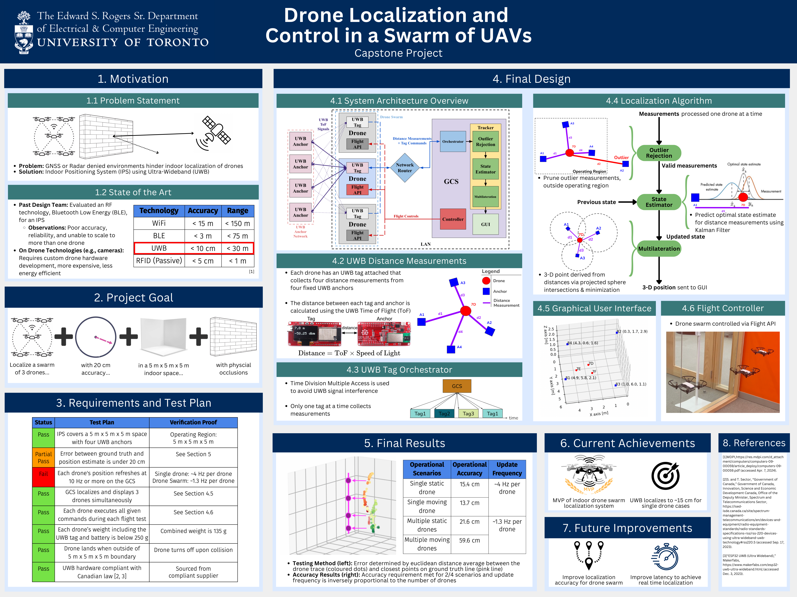

Indoor Drone Localization
As part of my Senior year Engineering Capstone course (ECE496) at UofT, my team and I designed and implemented an Indoor Positioning System for a swarm of Unmanned Aerial Vehicles. The primary goal of the capstone was is to accurately localize a swarm of three drones flying indoors within a 20 cm error radius, including when occluded by physical barriers. The team evaluated a combination of centralized and decentralized localization solutions using Radio Frequency technology such as Bluetooth Low Energy and Ultra-Wideband (UWB). The team chose to implement a centralized solution using UWB due to its high accuracy and reliability. Below is our design fair poster summarizing the project.
We set up a centralized UWB anchor network to measure the Time of Flight (ToF) of UWB signals between UWB anchors and tags that are attached to drones flying within the operating region. ToF values are collected on the UWB tags and used to derive distance measurements, subsequently sent to the central Ground Control Station (GCS) via the Local Area Network. The GCS filters and processes these measurements and employs a multilateration algorithm to produce accurate position estimates in cartesian coordinates which are displayed on the Graphical User Interface (GUI). The GCS serves additional functions including programmatically controlling the drones and running validation algorithms to evaluate the localization accuracy.
During testing, we evaluated four scenarios including static and dynamic cases for a single drone as well as static and dynamic cases for a swarm of three drones. We accurately localized a single drone for both static and dynamic cases within 15 cm. However, challenges emerged when scaling the system to handle a swarm of three drones resulting in accuracy error exceeding the 20 cm target. Specifically, we recorded 22 cm of error for a static swarm and 60 cm of error for a dynamic swarm. This setback stemmed from budget and hardware constraints, resulting in higher latency in UWB measurements due to hardware connectivity issues in swarm scenarios.
Despite these challenges, the localization accuracy goals were met for a single drone. Further refinements can be made by future capstone teams to improve the scalability of the system by establishing reliable UWB connections. This should improve accuracy and reduce the measurement latency when localizing a swarm of drones indoors.
My key contributions centered around designing the system, implementing the GCS, and developing validation tests. I led design decisions for the system architecture and helped manage the development throughout the project. I architectured the drone localization pipeline repository on the GCS to be both modular and configurable. Within the main GCS pipeline, I developed the orchestrator to manage communication with the UWB tags and coordinate the Time Division Multiple Access windows. I engineered and evaluated several state estimation filters including moving average, Kalman, and extended Kalman filters. I also developed and iterated on the multilateration algorithm before settling on the best-performing version. Additionally, I programmed the GUI visualizing the localized drones in 3-D space. Besides the core localization pipeline, I led system performance evaluation efforts. I developed testing tools on the GCS such as a simulator to mimic UWB tag data, a data capture mechanism to store measurement traces, and a replay system for replicating test scenarios. I also developed evaluation scripts to assess localization accuracy against ground truth measurements and plot trajectory traces.
GitHub Project Repository